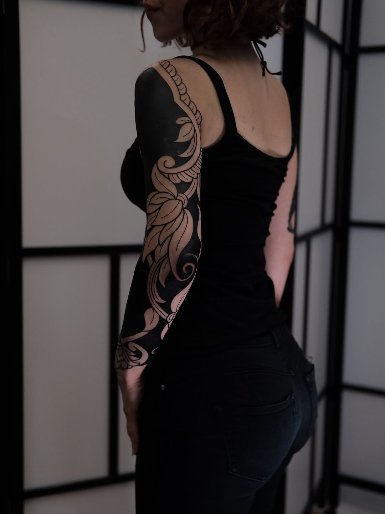

The discipline of boundaries — a conversation with Daniele Caputo (Sner)
On graffiti origins, Florence's Renaissance geometry, large-scale ornamental blackwork, and what keeps the work alive across marathon sessions.
"Boundaries between work and life aren't a luxury. They're what keeps the creativity alive."
Q.01Origin & Name — How did you arrive at "Snertattoos" and what's the story behind your start in 2012?
Let's start from the beginning. I was born in Germany where the graffiti scene was blooming in the 90s. So it all was pretty classic: I used to do graffiti writing, and when I first started tattooing in 2012 I was totally into lettering. I just wanted to express my creativity like I used to. I always tried to draw with balance and symmetry, and soon an obsession for precision and geometry was born. This is where I felt in love with geometry. So, back to the first part of the question: SNER is just a combination of letters I loved to draw on the walls.
Q.02Florence & The Tuscan Scene — Has the artistic heritage of Tuscany influenced your approach? What's the scene like there?
That heritage always told me one thing: if certain things have been done freehand, with traditional tools, no computer, you can do as many things on the body. I believe that we absorb everything, and of course the place I get to see every day has a big role in how you create and get to imagine things. The scene in Florence is pretty vibrant: you can find a lot of talented artists for every style. I think there could be way more collaboration and stuff like it used to be back in the day. I feel nowadays the scene is not too cohesive anymore and everybody walks just his own path. Luckily there are still conventions like ANKONVENTIONAL in Ancona where we share with each other.
Q.03Large-Scale Vision — How do you approach designing a piece meant to live with someone permanently?
I think that a large-scale tattoo should dress the body. I tend to have a symmetrical approach and try to coordinate and balance everything as much as possible. I find a lot of help looking at Japanese irezumi tradition. With large-scale work across multiple sessions, the challenge is, more than technical, relational.
I think it is important to show people how their body could look, but not many people would pick a "wanna-do" bodysuit, so the journey starts from a conversation where we both put our ideas on the table. The right artist has to find the right person and vice versa. The design evolves between sessions, you can see where or if the balance needs to shift.

Each session is a continuation of the same dialogue, not a separate appointment. Everything starts from trust and intention.
Q.04Technique & Ornament — Do you freehand the ornamental elements, or does software play a role?
I love to be as efficient as possible. Where stencil doesn't work, I draw freehand. I tend to sketch on the body to get a rough idea of how things could flow. When I figure out the real proportions, I sketch on the iPad. I keep in mind the big picture and play with different placements. I don't like to create a "signature composition" and love to get a lot of input from my clientele. They have to carry the work BEFORE my portfolio.
Q.05Sacred vs. Aesthetic — Do you embed specific meaning in your patterns, or treat them as pure aesthetic exploration?
Although I try to be as aware as possible about meanings and symbols, I have a more aesthetic approach. But when somebody asks for symbolic weight, I'm open to it.
Q.06Italian Influences — Are there architectural references or cultural patterns that quietly inform your geometric language?
The Florence Cathedral is a great example: built across centuries, countless different hands and architectural styles, each leaving their mark. Not a unified vision, but a layered conversation across time. Also take a look at the Cathedral of Monreale, Palermo: Byzantine mosaics, Arab-Norman arches, geometry that comes from three civilizations pressed together under one roof. Nothing pure, nothing canonical, everything in tension and somehow completely coherent.
That non-linearity is exactly how I understand my way of designing. My influences are multiethnic, non-linear, and shaped by my experience. I love to travel and explore different cultures and heritages, references are literally EVERYWHERE if you have a good eye!
From the archive

Q.07Client Dynamic — How collaborative is the final composition vs. your artistic direction?
My approach is more collaborative than directive. I find that's one of the hardest things to balance out. But I trust in the flow and try to go with it: the main goal will always be to give a nice tattoo to someone. It's not about the artistic ego. I'm not into fine art, I'm into tattooing. And I'm loving it! That said, I hope that I'll be able to create that whole bodysuit for someone which will also 100% fit my artistic vision, isn't this every tattooers dream?
Q.08Studio Life @locuswomb — What's the energy like there, and how does it compare to conventions or guest spots?
Locus Womb is a modern, drama-free tattoo studio. The owner Massimo Miai intended to recreate the vibe of a tattoo convention where people work and share the studio experience alongside each other (which doesn't mean that there's no privacy or personal space). Here I'm able to focus on my work as I should, without isolating myself in a private booth. We all work by appointment only, so there is no rush or stress around us.
Q.09Physical Endurance — What's your routine for maintaining focus and creative energy across marathon sessions?
I always try to stay fit, eat healthy, and respect my soul. That's already the biggest part of the work. The rest comes from music, a good environment, and solid organization.
As a father, I keep pretty strict hours. Not because I lack passion, but because I've watched too many artists burn out, slowly becoming numb to their own work, sacrificing their physical and mental health in the name of dedication. That's not dedication — that's erosion. When I sit down for a long session, I'm present because I've protected the space around it.
I don't feel particularly Italian, or particularly German. I feel international in the way that a pattern can be.
Originating somewhere specific, belonging everywhere. Daniele's influences are multiethnic, non-linear, and shaped by a lifetime of looking closely at the geometry of cathedrals, the flow of graffiti letters, and the quiet discipline of the needle.
He works at Locus Womb in Florence — a space built on the energy of a convention floor, where artists share the room without losing the solitude the work demands.
Q.10What's Next — Any dream project or shapes you want to explore in the next year?
Right now, with a small child and a second one coming, I'm pretty into family life. I'm looking forward to traveling more in the future, dreaming about my first bodysuit, and open to any kind of collaboration. For the moment I'm just grateful for every person who makes my work possible. The ones who sit in my chair, trust the process, and carry the work forward on their skin. That's everything.
Q.11OMF Feature — Anything you'd like to say to the OMF Geometry community?
Share as much as you can, be kind and be grateful. A friend once told me: everybody was a beginner ;)
Spring 2026 · Florence, Italy
{kind=link}
{kind=link}
{kind=link}